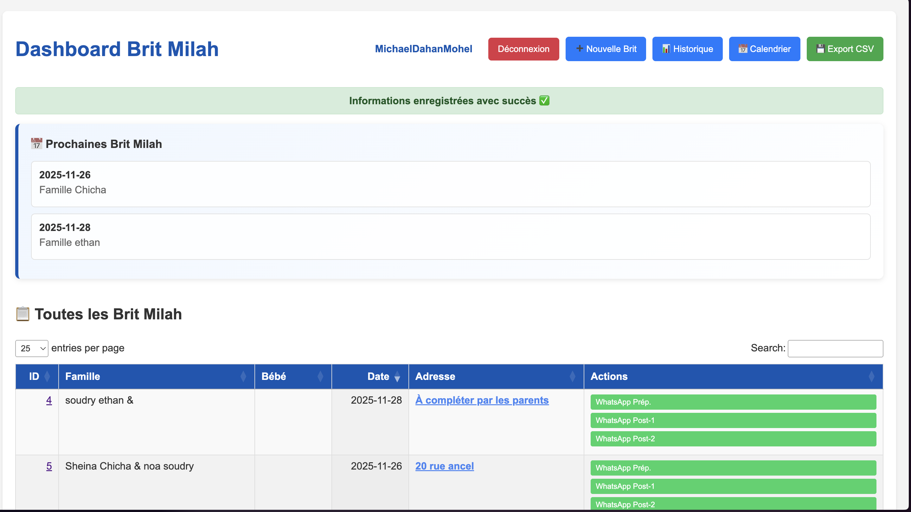
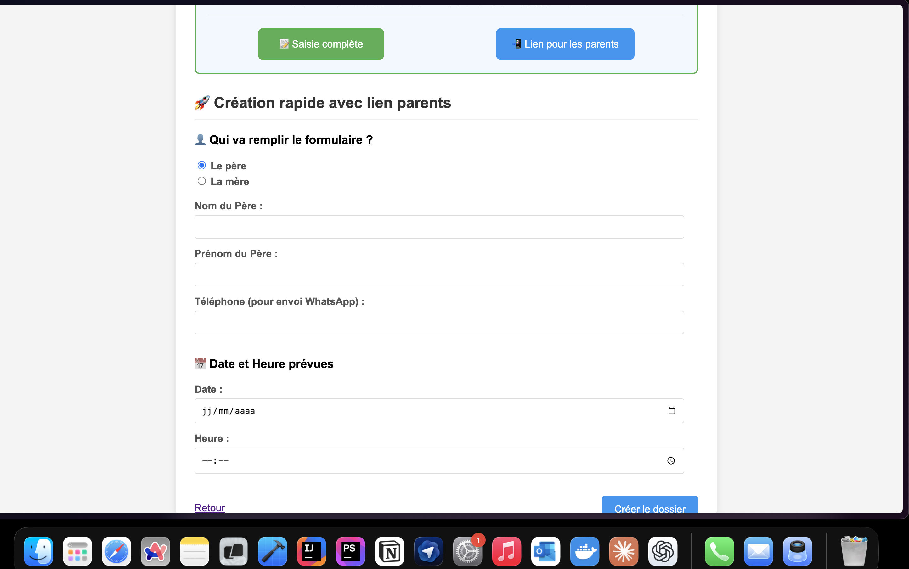
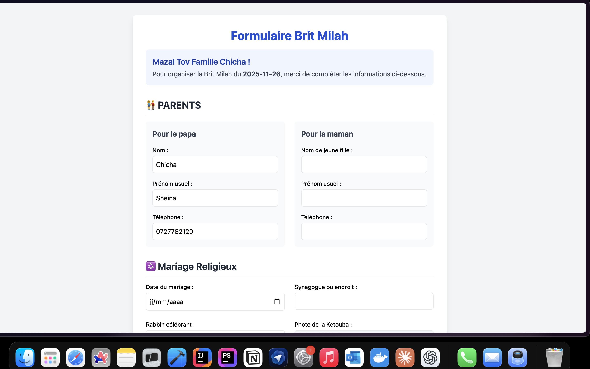
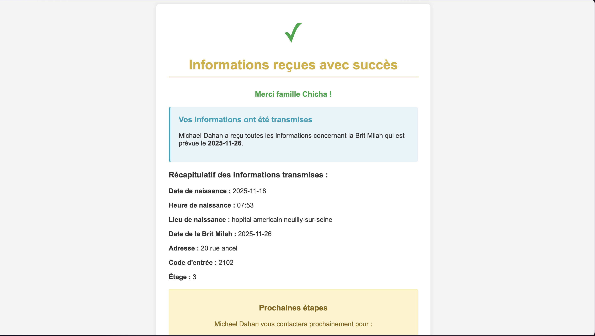

Gestion des Brit Milah
Application complète pour un mohel : création rapide de dossiers, envoi automatique d’un formulaire aux parents, calcul des dates de Brit et dashboard de suivi avec actions WhatsApp.
- Python / Flask
- PostgreSQL + SQLAlchemy
- Génération PDF (ReportLab)
- HTML / CSS
- Intégration WhatsApp
Problématique
Avant l’outil, l’organisation d’une Brit Milah se faisait par messages WhatsApp, appels et notes papier. Résultat : risque d’erreurs de date, d’adresse ou d’oubli d’informations importantes (code d’entrée, étage, etc.).
Objectifs
- Centraliser toutes les Brit Milah dans un tableau de bord unique.
- Simplifier la saisie pour le mohel (création rapide du dossier).
- Laisser les parents compléter eux-mêmes toutes les informations détaillées.
- Automatiser les messages WhatsApp et l’export des données.

Dashboard Brit Milah : prochaines Brit en haut, tableau complet en dessous, actions WhatsApp et export CSV à droite.
Création rapide du dossier côté mohel
Depuis son espace sécurisé, le mohel peut créer un nouveau dossier en quelques secondes :
- Choix de la personne qui remplira le formulaire (père ou mère).
- Saisie minimale : nom, prénom, téléphone WhatsApp, date et heure prévues.
- Un bouton génère automatiquement un lien unique pour les parents.
Ce lien est ensuite envoyé aux parents (WhatsApp/SMS). Toutes les futures informations seront directement associées à ce dossier.

Création rapide avec génération d’un lien unique pour les parents.
Formulaire reçu par les parents
Les parents accèdent à une page dédiée, personnalisée avec leur nom et la date de la Brit. Le formulaire est structuré en sections claires :
- Parents : coordonnées complètes du père et de la mère.
- Mariage religieux : date, lieu, rabbin, etc.
- Bébé : prénom, date et heure de naissance, lieu de naissance.
- Lieu de la Brit : adresse, code, étage, précisions.
Toutes les données sont stockées en base sans ressaisie par le mohel, ce qui réduit fortement les erreurs.

Formulaire Brit Milah rempli par les parents : sections Parents, Mariage religieux, informations sur le bébé et adresse complète.

Page de confirmation récapitulative envoyée aux parents après validation du formulaire.
Dashboard & automatisation
Côté mohel, toutes les Brit sont centralisées dans un dashboard :
- Bloc “Prochaines Brit Milah” avec les cérémonies à venir.
- Tableau détaillé : famille, bébé, date, adresse, statut de la fiche.
- Liens directs vers la fiche détaillée ou le formulaire parents.
Actions rapides :
- Boutons WhatsApp préconfigurés (préparation, rappels, messages post-brit).
- Export CSV pour travailler les données dans Excel / Google Sheets.
- (Prévu) Vue calendrier pour visualiser les Brit sur un mois.
Partie technique & compétences
Stack technique
- Back-end : Python / Flask (routes, login, génération des liens, API JSON).
- ORM : SQLAlchemy pour les modèles
BritMilaetUser. - Base de données : PostgreSQL (local + Railway).
- Front-end : HTML + CSS (interfaces dashboard + formulaires parents).
- PDF : ReportLab pour générer une fiche Brit Milah téléchargeable.
- Exports : CSV + endpoints JSON pour recherche et calendrier.
- Intégrations : liens WhatsApp pré-remplis pour envoyer le formulaire aux parents.
Compétences mises en avant
- Conception d’un vrai flux métier de bout en bout (mohel & parents).
- Gestion d’un CRUD complet avec ORM + base SQL.
- Travail sur des données sensibles (infos famille / santé) avec rigueur.
- Automatisation de tâches récurrentes (messages, exports, PDF).